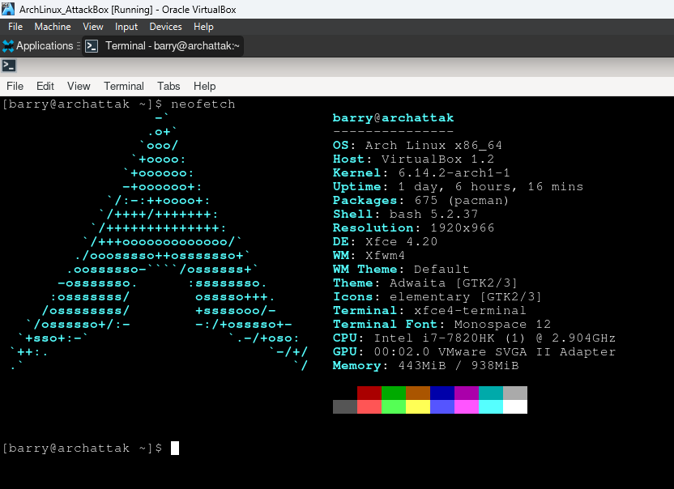
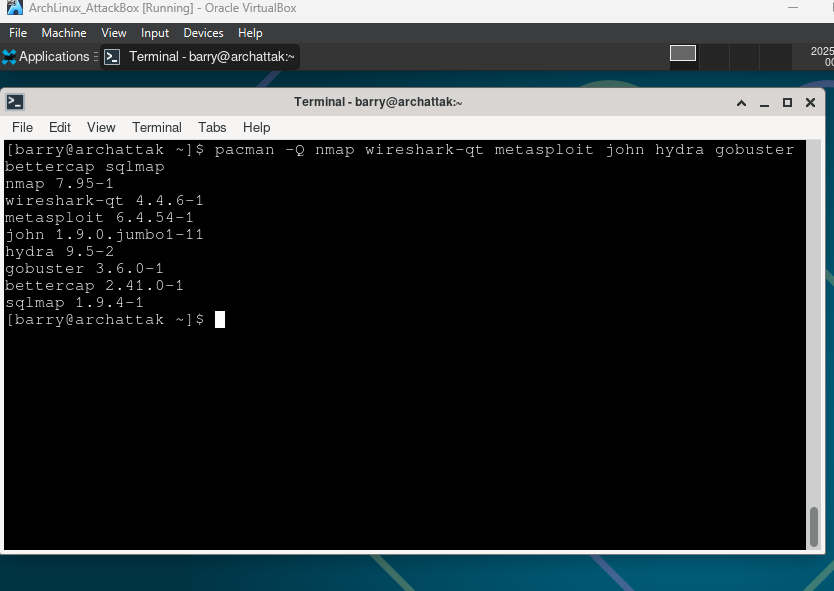
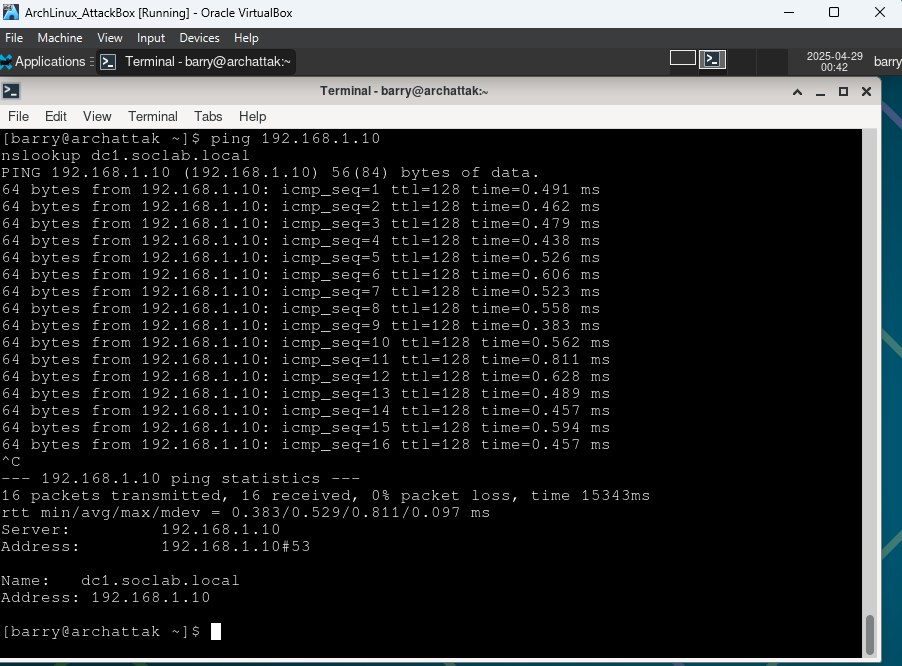
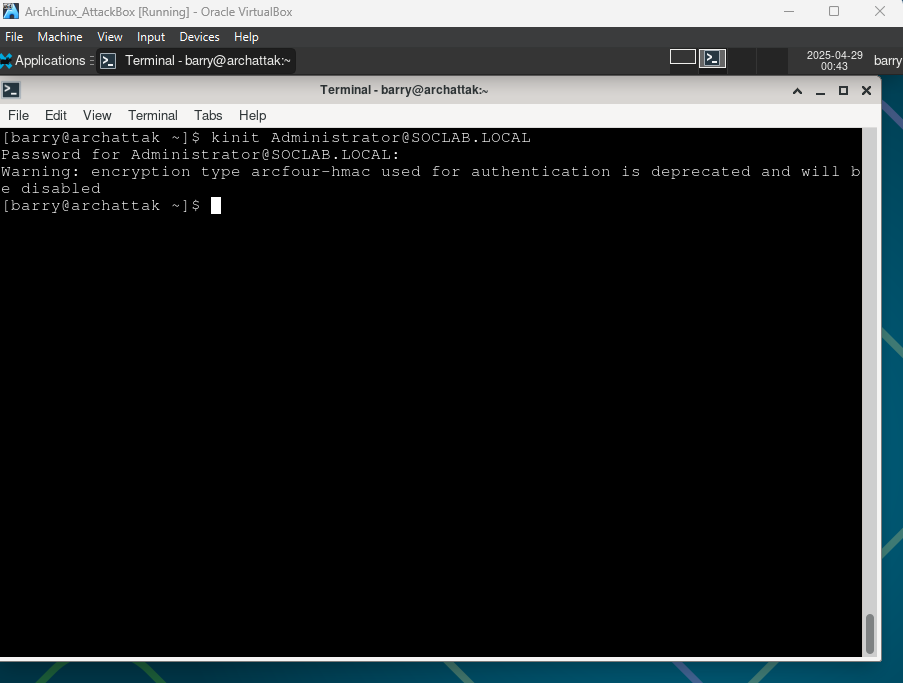
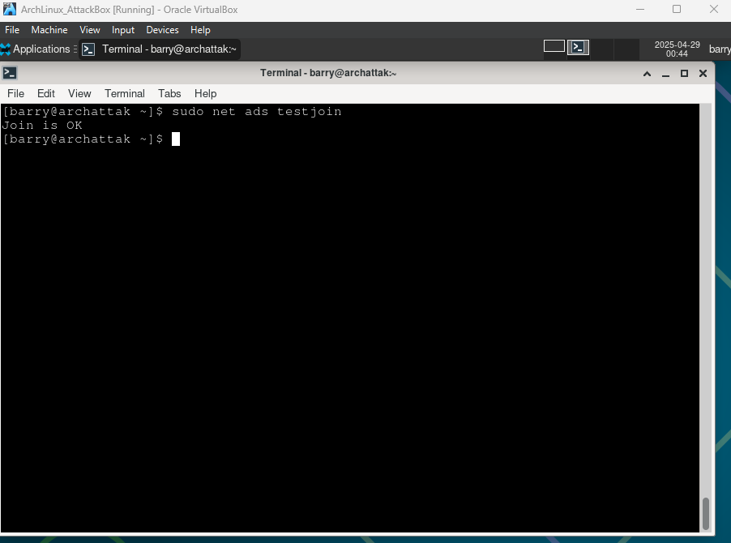

🔍 Project Summary
Phase 2 expands the SOC lab by adding ArchLinuxSOC (ArchAttack), a Linux-based system for security analysis. This phase involves installing Arch Linux, configuring essential cybersecurity tools, and integrating the system with the soclab.local domain using Samba and Kerberos.
📊 Lab Architecture

📸 Screenshots
Figure 18: Arch Linux Confirmation
Arch Linux confirmation with `neofetch` showing the Arch logo and system specs on ArchLinuxSOC.
Figure 19: Essential Tool Installations
Installing essential cybersecurity tools via `pacman` on ArchLinuxSOC, including Nmap, Wireshark, Metasploit, John, Hydra, Gobuster, Bettercap, Ncat, and SQLMap.
Figure 20: Domain Discovery and DNS Resolution
Successful `ping` to 192.168.1.10 and `nslookup` resolving dc1.soclab.local, confirming DNS resolution on ArchLinuxSOC.
Figure 21: Kerberos Authentication
Successful `kinit` with Administrator@SOCLAB.LOCAL on ArchLinuxSOC, verifying Kerberos authentication.
Figure 22: Domain Join
Confirmation of ArchLinuxSOC domain join with `net ads testjoin` showing 'Join is OK'.
🧰 Tools & Technologies
- Arch Linux
- Windows Server 2019
- Windows 10
- Ubuntu Server 22.04
- Splunk Enterprise + Universal Forwarder
- Active Directory, GPO, DNS, SMB
- Samba, Kerberos (for domain integration)
- Cybersecurity Tools: Nmap, Wireshark, Metasploit, John, Hydra, Gobuster, Bettercap, Ncat, SQLMap